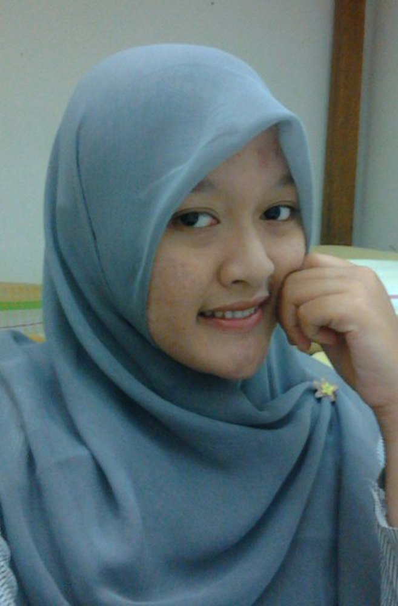

Nama :
Miranti Dwi Kurnia
Tempat Lahir :
Karawang
Tanggal Lahir :
XX/XX/1993
Jenis Kelamin :
Perempuan
Alamat : Ds. Sumuragung, Kec. Sumberrejo, Kab. Bojonegoro
Pendidikan Terakhir : S1
Riwayat Pendidikan :
- TK : Taman Kanak-Kanak Windu Bakti, Karawang
- SD :
- SDN 1 Sungai Buntu (Kelas 1), Karawang
- SDN 1 Surade (Kelas 2-4), Sukabumi
- SDN 1 Sumberrejo (Kelas 5-6), Bojonegoro
- SMP : SMPN 1 Balen, Bojonegoro
- SMA : SMAN 1 Bojonegoro, Bojonegoro
- PT : Universitas Negeri Malang, Malang

Informasi Kontak
Email : miranti21@gmail.com
Facebook : Miranti Dwi Kurnia
Twitter : @Miyrantiy
Telephone : -
No. Hand Phone : 085730046522